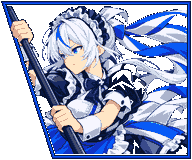
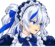

CLICHÉX4 · AOKUMO RIN
나나 / 린 모드 · 메이드 의상과 한쪽 묶음 · 대걸레 자루와 원작 검기 · 레드 린
CHARACTER ILLUSTRATION

최신 패치의 그림·배색·창 테두리
IN-GAME SPRITES
대기
이동
점프
대시
승리
DIALOGUE & HUNTER BASE
플레이어 외형부터 UI 속 모습까지.표정과 장비 상태에 맞춘 교체 그림.
